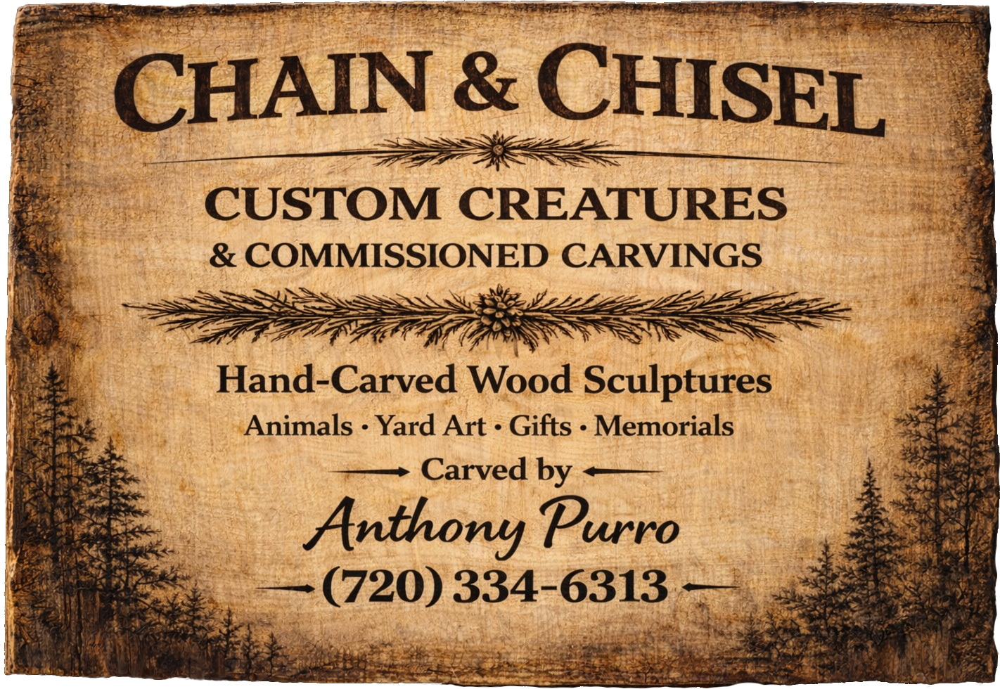

About
My uncle is a chainsaw artist who has been carving wooden sculptures for over 30 years. Needless to say, whenever I would visit 'Uncle Frank' I couldn't help but have some fun trying my hand at carving. Looking at the Gallery photos, you can see that some of my early work was a bit blocky and unrefined. I've grown since, but I'm still improving with each piece I create. I have to say, that I wish I had stepped out sooner, although not all commissioned, each of the pieces you see here on the site have sold, which gave me the confidence to show my work and endevor to get more commissioned sculptures. Better late than never!
